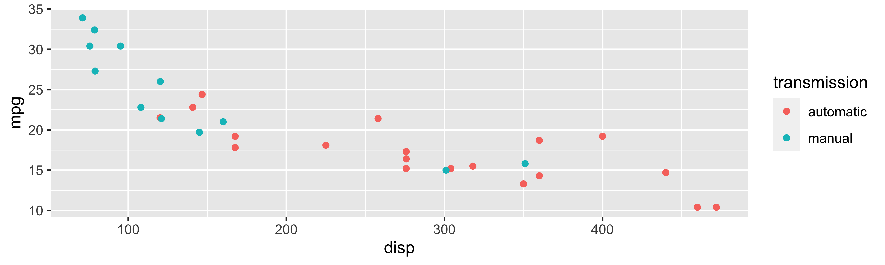
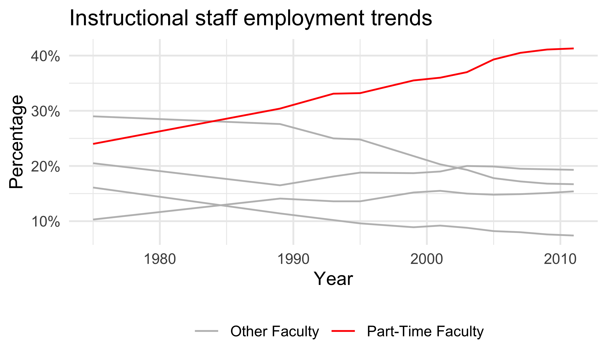

Data Management with the tidyverse
Adapted from parts of Mine Çetinkaya-Rundel’s tidyverse course
Nicky Wakim
2023-01-10
![A cartoon of a fuzzy round monster face showing 10 different emotions experienced during the process of debugging code. The progression goes from (1) “I got this” - looking determined and optimistic; (2) “Huh. Really thought that was it.” - looking a bit baffled; (3) “...” - looking up at the ceiling in thought; (4) “Fine. Restarting.” - looking a bit annoyed; (5) “OH WTF.” Looking very frazzled and frustrated; (6) “Zombie meltdown.” - looking like a full meltdown; (7) (blank) - sleeping; (8) “A NEW HOPE!” - a happy looking monster with a lightbulb above; (9) “insert awesome theme song” - looking determined and typing away; (10) “I love coding” - arms raised in victory with a big smile, with confetti falling.](02_Data_Management/debugging.png)
Artwork by @allison_horst
Introduction to the tidyverse
What is the tidyverse?
The tidyverse is a collection of R packages designed for data science. All packages share an underlying design philosophy, grammar, and data structures.
- ggplot2 - data visualisation
- dplyr - data manipulation
- tidyr - tidy data
- readr - read rectangular data
- purrr - functional programming
- tibble - modern data frames
- stringr - string manipulation
- forcats - factors
- and many more …

Tidy data1
Each variable must have its own column.
Each observation must have its own row.
Each value must have its own cell.
Pipe operator (magrittr)
- The pipe operator (
%>%) allows us to step through sequential functions in the same way we follow if-then statements or steps from instructions
I want to find my keys, then start my car, then drive to work, then park my car.
Recoding a binary variable with pipe operator
Let’s say I want a variable transmission to show the category names that are assigned to numeric values in the code. I want 0 to be coded as automatic and 1 to be coded as manual.
Recoding a multi-level variable
Let’s say I want a variable gear to show the category names that are assigned to numeric values in the code. I want 3 to be coded as gear three, 4 to be coded as gear four, 5 to be coded as gear five.
ggplot2 revisited
ggplot2 in tidyverse

We talked about this in our review notes
- I want to revisit it: always helps to have more examples!
- This example is closer to the multivariable work we’ll do in this class!
- ggplot2 is tidyverse’s data visualization package
- The
ggin “ggplot2” stands for Grammar of Graphics
- It is inspired by the book Grammar of Graphics by Leland Wilkinson
Tidyverse: Visualizing multiple variables

Poll Everywhere Question 1
Tidyverse: Visualizing even more variables

Base R: Visualizing even more variables
mtcars$trans_color <- ifelse(mtcars$transmission == "automatic", "green", "blue")
mtcars_cyl4 = mtcars[mtcars$cyl == 4, ]
mtcars_cyl6 = mtcars[mtcars$cyl == 6, ]
mtcars_cyl8 = mtcars[mtcars$cyl == 8, ]
par(mfrow = c(1, 3), mar = c(2.5, 2.5, 2, 0), mgp = c(1.5, 0.5, 0))
plot(mpg ~ disp, data = mtcars_cyl4, col = trans_color, main = "Cyl 4")
plot(mpg ~ disp, data = mtcars_cyl6, col = trans_color, main = "Cyl 6")
plot(mpg ~ disp, data = mtcars_cyl8, col = trans_color, main = "Cyl 8")
legend("topright", legend = c("automatic", "manual"), pch = 1, col = c("green", "blue"))Functions for data management
Important functions for data management
Data manipulation
pivot_longer()andpivot_wider()rename()mutate()filter()select()
Summarizing data
tbl_summary()group_by()summarize()across()
Data manipulation
Example for pivot_longer(): Instructional staff employment trends
The American Association of University Professors (AAUP) is a nonprofit membership association of faculty and other academic professionals. This report by the AAUP shows trends in instructional staff employees between 1975 and 2011, and contains an image very similar to the one given below.

Data
Each row in this dataset represents a faculty type, and the columns are the years for which we have data. The values are percentage of hires of that type of faculty for each year.
# A tibble: 5 × 12
faculty_type `1975` `1989` `1993` `1995` `1999` `2001` `2003` `2005` `2007`
<chr> <dbl> <dbl> <dbl> <dbl> <dbl> <dbl> <dbl> <dbl> <dbl>
1 Full-Time Tenu… 29 27.6 25 24.8 21.8 20.3 19.3 17.8 17.2
2 Full-Time Tenu… 16.1 11.4 10.2 9.6 8.9 9.2 8.8 8.2 8
3 Full-Time Non-… 10.3 14.1 13.6 13.6 15.2 15.5 15 14.8 14.9
4 Part-Time Facu… 24 30.4 33.1 33.2 35.5 36 37 39.3 40.5
5 Graduate Stude… 20.5 16.5 18.1 18.8 18.7 19 20 19.9 19.5
# ℹ 2 more variables: `2009` <dbl>, `2011` <dbl>Poll Everywhere Question 2
Recreate the visualization
- In order to recreate this visualization we need to first reshape the data:
- one variable for faculty type
- one variable for year
- Convert the data from the wide format to long format
pivot_longer()

pivot_*() functions

Poll Everywhere Question 3
Pivot staff data and mutate percentage
(staff_long <- staff %>%
pivot_longer(
cols = -faculty_type, # columns to pivot
names_to = "year", # name of new column for variable names
values_to = "percentage" # name of new column for values
) %>%
mutate(percentage = as.numeric(percentage))
)# A tibble: 55 × 3
faculty_type year percentage
<chr> <chr> <dbl>
1 Full-Time Tenured Faculty 1975 29
2 Full-Time Tenured Faculty 1989 27.6
3 Full-Time Tenured Faculty 1993 25
4 Full-Time Tenured Faculty 1995 24.8
5 Full-Time Tenured Faculty 1999 21.8
6 Full-Time Tenured Faculty 2001 20.3
7 Full-Time Tenured Faculty 2003 19.3
8 Full-Time Tenured Faculty 2005 17.8
9 Full-Time Tenured Faculty 2007 17.2
10 Full-Time Tenured Faculty 2009 16.8
# ℹ 45 more rowsA “meh” plot over the years

More improvement
staff_long %>%
mutate(
part_time = if_else(faculty_type == "Part-Time Faculty",
"Part-Time Faculty", "Other Faculty"),
year = as.numeric(year)) %>%
ggplot(
aes(x = year, y = percentage/100, group = faculty_type, color = part_time)) +
geom_line() +
scale_color_manual(values = c("gray", "red")) +
scale_y_continuous(labels = label_percent(accuracy = 1)) +
theme_minimal() +
labs(
title = "Instructional staff employment trends",
x = "Year", y = "Percentage", color = NULL) +
theme(legend.position = "bottom")
All that just to show one helpful function
Now we can move onto the other functions mentioned:
Data manipulation
pivot_longer()andpivot_wider()rename()mutate()filter()select()
Summarizing data
tbl_summary()group_by()summarize()across()
Let’s look back at the dds.discr dataset that I briefly used last class
- We will load the data (This is a special case!
dds.discris a built-in R dataset)
- Now, let’s take a glimpse at the dataset:
Rows: 1,000
Columns: 6
$ id <int> 10210, 10409, 10486, 10538, 10568, 10690, 10711, 10778, 1…
$ age.cohort <fct> 13-17, 22-50, 0-5, 18-21, 13-17, 13-17, 13-17, 13-17, 13-…
$ age <int> 17, 37, 3, 19, 13, 15, 13, 17, 14, 13, 13, 14, 15, 17, 20…
$ gender <fct> Female, Male, Male, Female, Male, Female, Female, Male, F…
$ expenditures <int> 2113, 41924, 1454, 6400, 4412, 4566, 3915, 3873, 5021, 28…
$ ethnicity <fct> White not Hispanic, White not Hispanic, Hispanic, Hispani…rename(): one of the first things I usually do
I notice that two variables have values that don’t necessarily match the variable name
Female and male are not genders
“White not Hispanic” combines race and ethnicity into one category
I want to rename gender to SAB (sex assigned at birth) and rename ethnicity to R_E (race and ethnicity)
Rows: 1,000
Columns: 6
$ id <int> 10210, 10409, 10486, 10538, 10568, 10690, 10711, 10778, 1…
$ age.cohort <fct> 13-17, 22-50, 0-5, 18-21, 13-17, 13-17, 13-17, 13-17, 13-…
$ age <int> 17, 37, 3, 19, 13, 15, 13, 17, 14, 13, 13, 14, 15, 17, 20…
$ SAB <fct> Female, Male, Male, Female, Male, Female, Female, Male, F…
$ expenditures <int> 2113, 41924, 1454, 6400, 4412, 4566, 3915, 3873, 5021, 28…
$ R_E <fct> White not Hispanic, White not Hispanic, Hispanic, Hispani…mutate(): constructing new variables from what you have
We’ve seen a couple examples for
mutate()so far (mostly because its used so often!)We haven’t seen an example where we make a new variable from two variables
I want to make a variable that is the ratio of expenditures over age
Rows: 1,000
Columns: 7
$ id <int> 10210, 10409, 10486, 10538, 10568, 10690, 10711, 10778, 1…
$ age.cohort <fct> 13-17, 22-50, 0-5, 18-21, 13-17, 13-17, 13-17, 13-17, 13-…
$ age <int> 17, 37, 3, 19, 13, 15, 13, 17, 14, 13, 13, 14, 15, 17, 20…
$ SAB <fct> Female, Male, Male, Female, Male, Female, Female, Male, F…
$ expenditures <int> 2113, 41924, 1454, 6400, 4412, 4566, 3915, 3873, 5021, 28…
$ R_E <fct> White not Hispanic, White not Hispanic, Hispanic, Hispani…
$ exp_to_age <dbl> 124.2941, 1133.0811, 484.6667, 336.8421, 339.3846, 304.40…Poll Everywhere Question 4
filter(): keep rows that match a condition
- What if I want to subset the data frame? (keep certain rows of observations)
I want to look at the data for people who between 50 and 60 years old
Rows: 23
Columns: 7
$ id <int> 15970, 19412, 29506, 31658, 36123, 39287, 39672, 43455, 4…
$ age.cohort <fct> 51+, 51+, 51+, 51+, 51+, 51+, 51+, 51+, 51+, 51+, 51+, 51…
$ age <int> 51, 60, 56, 60, 59, 59, 54, 57, 52, 57, 55, 52, 59, 54, 5…
$ SAB <fct> Female, Female, Female, Female, Male, Female, Female, Mal…
$ expenditures <int> 54267, 57702, 48215, 46873, 42739, 44734, 52833, 48363, 5…
$ R_E <fct> White not Hispanic, White not Hispanic, White not Hispani…
$ exp_to_age <dbl> 1064.0588, 961.7000, 860.9821, 781.2167, 724.3898, 758.20…select(): keep or drop columns using their names and types
- What if I want to remove or keep certain variables?
I want to only have age and expenditure in my data frame
Summarizing Data
tbl_summary() : table summary (1/2)
- What if I want one of those fancy summary tables that are at the top of most research articles? (lovingly called “Table 1”)
| Characteristic | N = 1,0001 |
|---|---|
| id | 55,385 (31,809, 76,135) |
| age.cohort | |
| 0-5 | 82 (8.2%) |
| 6-12 | 175 (18%) |
| 13-17 | 212 (21%) |
| 18-21 | 199 (20%) |
| 22-50 | 226 (23%) |
| 51+ | 106 (11%) |
| age | 18 (12, 26) |
| SAB | |
| Female | 503 (50%) |
| Male | 497 (50%) |
| expenditures | 7,026 (2,899, 37,713) |
| R_E | |
| American Indian | 4 (0.4%) |
| Asian | 129 (13%) |
| Black | 59 (5.9%) |
| Hispanic | 376 (38%) |
| Multi Race | 26 (2.6%) |
| Native Hawaiian | 3 (0.3%) |
| Other | 2 (0.2%) |
| White not Hispanic | 401 (40%) |
| exp_to_age | 462 (274, 938) |
| 1 Median (IQR); n (%) | |
tbl_summary() : table summary (2/2)
- Let’s make this more presentable
| Characteristic | N = 1,0001 |
|---|---|
| Age | 18 (12, 26) |
| Sex Assigned at Birth | |
| Female | 503 (50%) |
| Male | 497 (50%) |
| Expenditures | 7,026 (2,899, 37,713) |
| Race/Ethnicity | |
| American Indian | 4 (0.4%) |
| Asian | 129 (13%) |
| Black | 59 (5.9%) |
| Hispanic | 376 (38%) |
| Multi Race | 26 (2.6%) |
| Native Hawaiian | 3 (0.3%) |
| Other | 2 (0.2%) |
| White not Hispanic | 401 (40%) |
| 1 Median (IQR); n (%) | |
group_by(): group by one or more variables
- What if I want to quickly look at group differences?
- It will not change how the data look, but changes the actions of following functions
I want to group my data by sex assigned at birth.
Rows: 1,000
Columns: 7
Groups: SAB [2]
$ id <int> 10210, 10409, 10486, 10538, 10568, 10690, 10711, 10778, 1…
$ age.cohort <fct> 13-17, 22-50, 0-5, 18-21, 13-17, 13-17, 13-17, 13-17, 13-…
$ age <int> 17, 37, 3, 19, 13, 15, 13, 17, 14, 13, 13, 14, 15, 17, 20…
$ SAB <fct> Female, Male, Male, Female, Male, Female, Female, Male, F…
$ expenditures <int> 2113, 41924, 1454, 6400, 4412, 4566, 3915, 3873, 5021, 28…
$ R_E <fct> White not Hispanic, White not Hispanic, Hispanic, Hispani…
$ exp_to_age <dbl> 124.2941, 1133.0811, 484.6667, 336.8421, 339.3846, 304.40…- Let’s see how the groups change something like the
summarize()function in the next slide
summarize(): summarize your data or grouped data into one row
- What if I want to calculate specific descriptive statistics for my variables?
- This function is often best used with
group_by() - If only presenting the summaries, functions like
tbl_summary()is better summarize()creates a new data frame, which means you can plot and manipulate the summarized data
Over whole sample:
across(): apply a function across multiple columns
- Like
group_by(), this function is often paired with another transformation function
I want all my integer values to have two significant figures.
dds.discr6 = dds.discr2 %>%
mutate(across(where(is.integer), signif, digits = 2))
glimpse(dds.discr6)Rows: 1,000
Columns: 7
$ id <dbl> 10000, 10000, 10000, 11000, 11000, 11000, 11000, 11000, 1…
$ age.cohort <fct> 13-17, 22-50, 0-5, 18-21, 13-17, 13-17, 13-17, 13-17, 13-…
$ age <dbl> 17, 37, 3, 19, 13, 15, 13, 17, 14, 13, 13, 14, 15, 17, 20…
$ SAB <fct> Female, Male, Male, Female, Male, Female, Female, Male, F…
$ expenditures <dbl> 2100, 42000, 1500, 6400, 4400, 4600, 3900, 3900, 5000, 29…
$ R_E <fct> White not Hispanic, White not Hispanic, Hispanic, Hispani…
$ exp_to_age <dbl> 124.2941, 1133.0811, 484.6667, 336.8421, 339.3846, 304.40…Resources
dplyr resources
Additional details and examples are available in the vignettes:
and the dplyr 1.0.0 release blog posts:
R programming class at OHSU!
You can check out Dr. Jessica Minnier’s R class page if you want more notes, videos, etc.
The larger tidy ecosystem
Just to name a few…
Credit to Mine Çetinkaya-Rundel
These notes were built from Mine’s notes
Most pages and code were left as she made them
I changed a few things to match our class
Please see her Github repository for the original notes
Data Management